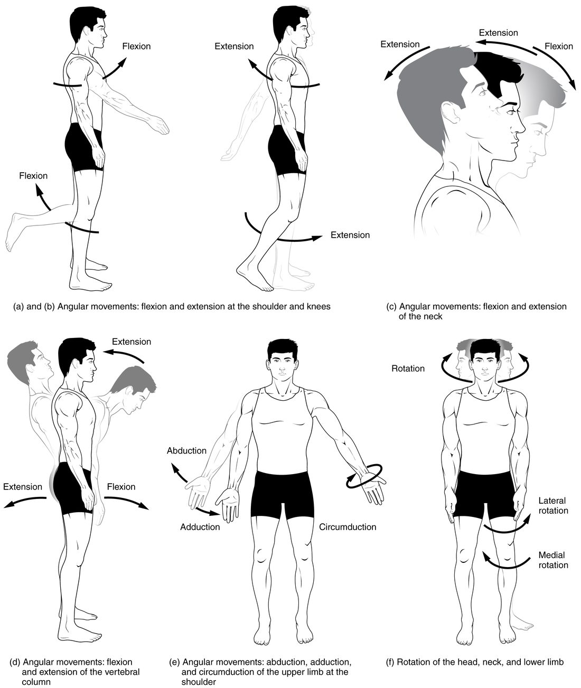
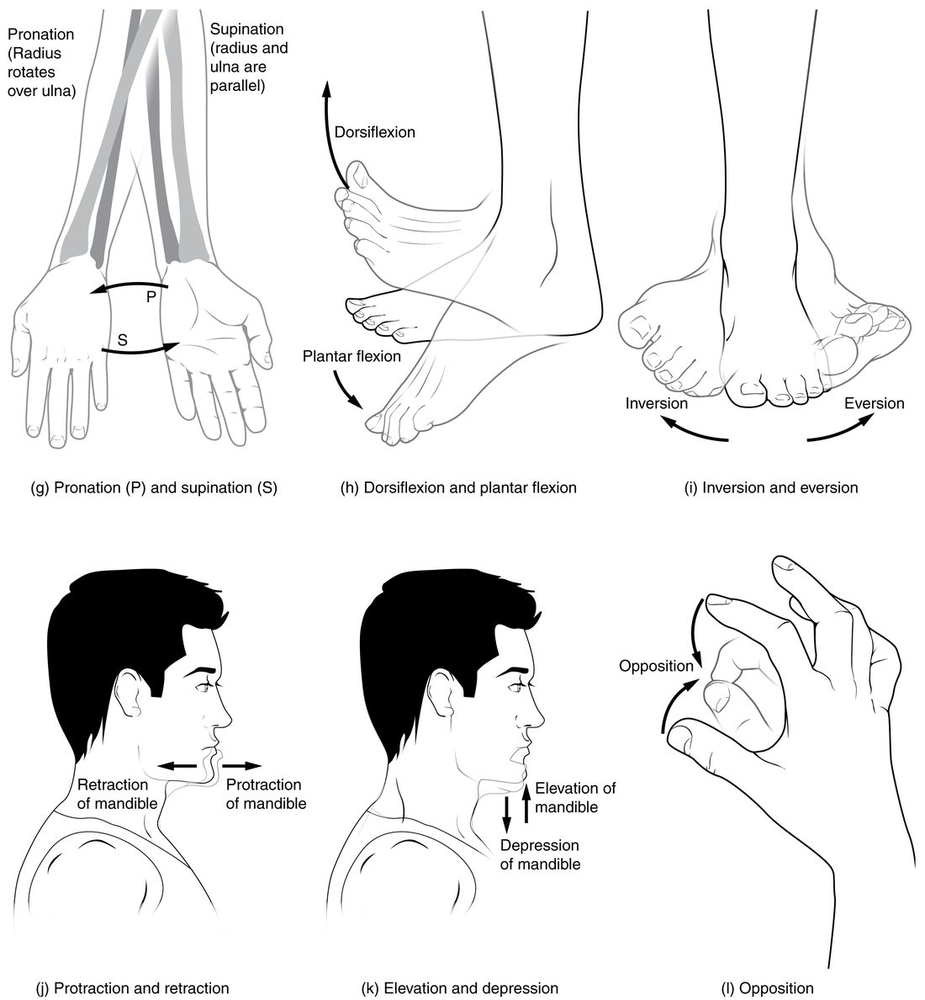

"Raise your arm" does not tell anyone which way. Forward? Out to the side? Body movements such as flexion, extension, abduction and adduction are the precise words clinicians use instead. Each one names a movement at a synovial joint by the plane it happens in and its direction, always measured from anatomical position. This page teaches the angular movements (flexion and extension, abduction and adduction), rotation and circumduction, and the special movements that belong to only a few joints: the forearm, ankle, foot, jaw, shoulder blade and thumb.
The starting point: anatomical position and the planes
Every movement is named as a change from anatomical position: standing upright, facing forward, arms at your sides with palms forward, feet flat. That posture is the zero point. A joint in anatomical position is not flexed, not abducted and not rotated.
Movement terms then lean on the body planes you already know:
- Movements in the sagittal plane carry a part forward or backward.
- Movements in the frontal plane carry a part out to the side or back toward the midline.
- Movements in the transverse plane turn a part around its own long axis.
Most movement words come in opposite pairs: one names the movement away from anatomical position, the other names the return. Figure 1 shows the main pairs.

Flexion and extension
Bend your elbow to bring your hand to your shoulder. The angle between your upper arm and forearm gets smaller. That is flexion. Straighten it again and the angle gets larger. That is extension.
- Flexion (flex- = bend) is a movement in the sagittal plane that decreases the angle between two bones, or bends the trunk or neck forward.
- Extension (ex- = out, tens- = stretch) is the opposite movement: it increases the angle and returns the part toward anatomical position.
Where each one happens:
- Shoulder: flexion lifts the arm forward and up; extension swings it back down and behind you.
- Hip: flexion lifts the thigh forward; extension swings it back.
- Knee: flexion bends the knee, carrying the leg backward toward the thigh; extension straightens it.
- Neck and trunk: flexion bends the head or trunk forward; extension brings it back upright.
- Wrist and fingers: flexion curls the palm and fingers toward the front of the forearm; extension straightens them.
The knee is the one to watch. Flexion there carries the leg backward, because the knee bends the opposite way from the elbow. The rule still holds: the angle between the bones gets smaller.
Hyperextension (hyper- = beyond) is extension past anatomical position. Tipping your head back to look at the ceiling hyperextends the neck; swinging your arm behind you hyperextends the shoulder. Some joints cannot hyperextend: the olecranon locks into the olecranon fossa and stops the elbow. In a rear-end car crash, the head is thrown back and the neck can be hyperextended beyond what its ligaments allow. Hyperflexion is flexion beyond the normal range, such as the chin forced hard onto the chest in a head-on car crash.
Abduction and adduction
Lift your arm straight out to the side. That is abduction. Bring it back down to your side. That is adduction.
- Abduction (ab- = away from, duct- = lead) moves a limb away from the midline of the body in the frontal plane. The verb is to abduct.
- Adduction (ad- = toward) moves it back toward the midline. The verb is to adduct.
To hear the difference, say them aloud: ab-duction takes a limb away, ad-duction adds it back to the body.
Abduction and adduction happen at the shoulder, the hip, the wrist (tilting the hand toward the thumb side or the little-finger side) and the knuckles. The fingers and toes use their own midline: fingers abduct when they spread apart from the middle finger, and toes when they spread from the second toe.
The trunk and neck bend to the side instead. Bending sideways at the waist, or tilting your ear toward your shoulder, is lateral flexion: a frontal-plane movement of the vertebral column.
Rotation and circumduction
Rotation turns a bone around its own long axis, in the transverse plane. Shake your head "no": your head rotates at the atlantoaxial joint.
In the limbs, rotation is named by which way the front of the bone turns:
- Medial rotation turns the front of the limb toward the midline. Pointing your knee and toes inward rotates your thigh medially at the hip.
- Lateral rotation turns the front of the limb away from the midline. Pointing your toes out rotates your thigh laterally.
Pivot joints and ball-and-socket joints allow true rotation, because they let a bone turn freely around its long axis. The shoulder and hip rotate; the elbow and fingers cannot. The knee, a hinge, can rotate a little, but only when it is bent.
Circumduction (circum- = around) moves the far end of a limb in a circle while the near end stays at the joint, so the limb sweeps out a cone. Draw a big circle in the air with your straight arm. Circumduction is not a separate kind of motion: it is flexion, abduction, extension and adduction done one after another in a smooth sequence. It needs a joint that moves in at least two planes, such as the shoulder, hip, wrist or knuckles.
| Rotation | Circumduction | |
|---|---|---|
| What moves | The bone turns around its own long axis | The far end of the limb traces a circle; the limb sweeps a cone |
| Plane | Transverse | Sagittal and frontal in turn |
| Made of | A single turning movement | Flexion, abduction, extension and adduction in sequence |
| Joint types that allow it | Pivot, ball-and-socket | Condyloid, saddle, ball-and-socket |
| Example | Shaking your head "no" | Drawing a circle with a straight arm |
Special movements
Some joints move in ways that need their own names. Figure 3 shows most of them.

Supination and pronation (forearm)
Hold your arms at your sides, palms forward, as in anatomical position. Your radius and ulna lie parallel. Now turn your palms to face backward. The radius has crossed over the ulna.
- Pronation turns the palm backward (or down, if your elbow is bent). The head of the radius turns inside the annular ligament at the proximal radioulnar joint, and the lower end of the radius swings around the ulna at the distal radioulnar joint, so the radius crosses the ulna. The forearm is then in the pronated position.
- Supination turns the palm forward (or up) again, and the radius and ulna return to parallel. The forearm is then in the supinated position, the position of anatomical position.
A memory hook: you hold a bowl of soup with a supinated hand, palm up. Note what does not move: the wrist. Pronation and supination happen between the radius and ulna, and the hand simply goes along with the radius.
Dorsiflexion and plantar flexion (ankle)
- Dorsiflexion (dors- = back, here the top of the foot) lifts the top of the foot toward the shin, as when you walk on your heels.
- Plantar flexion (plant- = sole) points the foot and toes down, as when you stand on tiptoe or press a car's gas pedal.
Both happen at the talocrural (ankle) joint, a hinge. The ankle uses these names instead of flexion and extension because books disagree on which of the two to call flexion. Dorsiflexion and plantar flexion avoid the confusion.
Inversion and eversion (foot)
- Inversion (in- = in, vers- = turn) turns the sole of the foot inward, toward the other foot.
- Eversion (e- = out) turns the sole outward, away from the midline.
These happen mostly at the subtalar joint and between the other tarsal bones, not at the ankle joint. Rolling your ankle when you land on the outer edge of your foot is sudden, forced inversion, which is why it tears the ligaments on the outer side of the ankle.
Protraction and retraction
- Protraction (pro- = forward, tract- = pull) moves a bone forward in the transverse plane. Jutting your jaw forward protracts the mandible. Reaching forward to push a door protracts the scapula: it slides forward around the rib cage.
- Retraction (re- = back) pulls it back. Squeezing your shoulder blades together retracts the scapulae.
Elevation and depression
- Elevation moves a bone upward. Shrugging elevates the scapulae; closing your mouth elevates the mandible.
- Depression moves it downward. Dropping your shoulders depresses the scapulae; opening your mouth depresses the mandible.
Excursion (jaw)
Slide your lower jaw to one side, as when you grind food. That is lateral excursion: side-to-side movement of the mandible away from the midline. Bringing it back to center is medial excursion. Both use the gliding part of the temporomandibular joint.
Superior and inferior rotation (scapula)
When you raise your arm high above your head, the scapula does not just slide up. It turns on the back of the rib cage so that its glenoid cavity tips upward. That is superior rotation of the scapula. Inferior rotation turns the glenoid cavity back down as the arm lowers. Without superior rotation you could lift your arm out to the side only a little past shoulder height.
Opposition and reposition (thumb)
Opposition brings the tip of the thumb across the palm to touch the tip of a finger. It happens at the saddle-shaped carpometacarpal joint of the thumb and combines flexion, abduction and a slight turning of the first metacarpal. Reposition returns the thumb to its resting place beside the index finger. Opposition is what lets you pinch and grip small objects.
Putting it together: naming a movement
Worked example: name each movement. A patient in anatomical position lifts her straight arm forward until it points at the ceiling, then turns her palm to face backward.
- First movement: which joint? The shoulder.
- Which plane? Forward and up is the sagittal plane.
- Which direction? Away from anatomical position, forward. In the sagittal plane, forward at the shoulder is flexion.
- Second movement: which joints? The radioulnar joints (the palm turns, the wrist does not).
- Which direction? Palm from forward to backward, radius crossing the ulna: pronation.
Answer: shoulder flexion, then forearm pronation. Always ask the same three questions: which joint, which plane, which direction from anatomical position.
| Flexion and extension | Abduction and adduction | Rotation | |
|---|---|---|---|
| Plane (most joints) | Sagittal | Frontal | Transverse |
| Away from anatomical position | Flexion (angle smaller) | Abduction (away from midline) | Medial or lateral rotation |
| Back toward it | Extension | Adduction | Rotation the other way |
| Beyond anatomical position | Hyperextension | Adduction past the midline, as when the arm crosses the body | None named |
| Example | Bending the elbow | Lifting the arm out to the side | Pointing the toes inward |
Summary
Every movement is named from anatomical position by its plane and direction. Flexion decreases the angle between bones in the sagittal plane (the knee flexes backward) and extension increases it; hyperextension goes past anatomical position and hyperflexion past the normal range. Abduction moves a limb away from the midline in the frontal plane and adduction back; the trunk bends sideways by lateral flexion. Medial and lateral rotation turn a bone around its long axis; circumduction sweeps a limb in a cone. The special movements belong to single regions: supination and pronation of the forearm, dorsiflexion and plantar flexion at the ankle, inversion and eversion of the foot, protraction and retraction, elevation and depression, lateral and medial excursion of the jaw, superior and inferior rotation of the scapula, and opposition and reposition of the thumb.